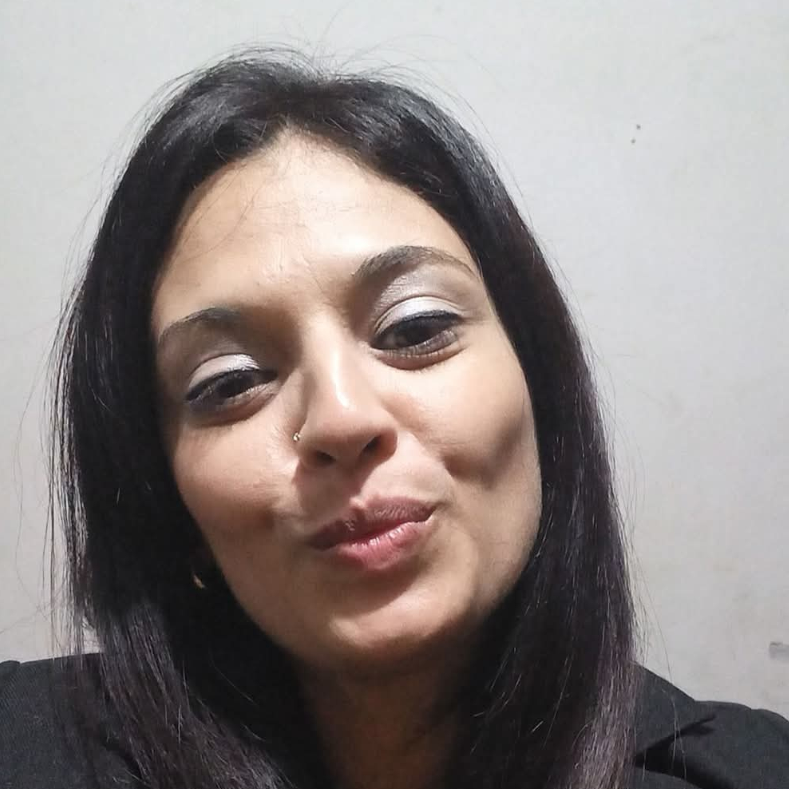
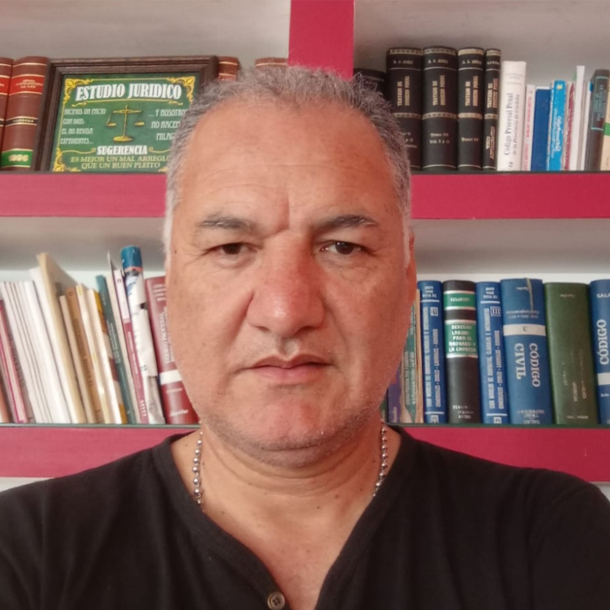

“Más o menos humanos”
Por Julieta Manzilla
¿Qué nos hace más humanos?
será algo así como... Leer más
poder empatizar, concientizar y poder reflexionar sobre lo que hacemos y lo que nos hacen.
Por Julieta Manzilla
¿Qué nos hace más humanos?
será algo así como... Leer más
 Por Rocío Videla
Por Rocío Videla
Ser humanos es eso,
llorar sin miedo,... Leer más Por Yohana Lencina
Manos que se tocan, ojos que se miran, palabras que nos hacen sentir vivos.
Un abrazo que nos calma, una palabra que nos anima... Leer másPor Irene Paz Fernández
Cuando cambiamos lo esencial por lo superficial;
cuando lo primordial se vuelve banal... Leer másPor Melisa Atencio
Vive el mundo con alegría,
vive el momento, riele a la vida.... Leer más
 Por Darío Saravia
Por Darío Saravia
El estalló por soportar la injusticia que veía,
Para que seguir, pensó,... Leer más
Por Bruno Vladimir Giménez
Un día
decidiste tomar el lápiz... Leer más
 Por Sandra Sosa
Por Sandra Sosa
Basta! me dije un día,
estas culpas no son mías... Leer más Por Hugo Berdún
No es la huella en la arena,
Ni el fuego domesticado,... Leer más